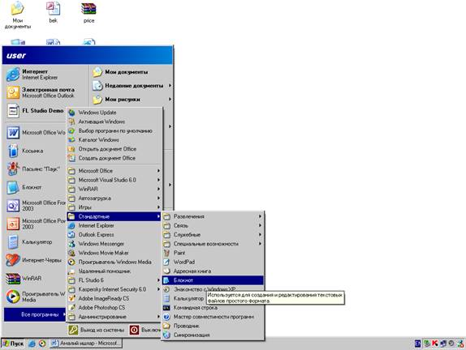
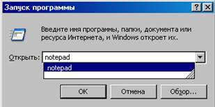

Amaliy ish №1.
Интернетнинг WWW хизмати кундан-кунга ривожланиб, мукаммал маълумотлар манбасига айланиб бормоқда. Унинг ёрдамида исталган сохада, исталган мавзуда ва исталган вақтда маълумотларни қидириб топиш, улардан фойдаланиш, зарур бўлса улардан нусха олиш мумкин. Интернетнинг ушбу хизмат туридан фойдаланиш учун аввало мижоз компьютерида худди шундай имкониятларни яратиб берувчи махсус дастур таъминоти бўлиши зарур. Бундай дастур таъминоти браузер (Browsers) деб аталади.
Энг биринчи браузер CERN (Европа Физика Тадқиқотлари Маркази) ходими Тим Бернер томонидан кашф қилинган. АҚШнинг NSCA (Миллий Супер Хисоблаш Маркази) ходими Марк Андриссон ва бир нечта талабалар томонидан ишлаб чиқилган Mosaic браузери эса график маълумотларни экранда акс эттира олувчи биринчи браузер бўлган.
Браузер инглизча сўз бўлиб, кўринишни таъминлаш, кўрсатиш маъносини англатади.
Дунёда энг кўп фойдаланиладиган браузерлар Netscape Communication Navigator ва Internet Explorer лар хисобланади.
Бугунги кунда Netscape хамда Internet Explorer дан ташқари яна кўплаб Opera, FMSD Friada, MSICE, Web celerator, AtGuard, AdWiper каби браузерлар мавжуддир. Браузерларга қўйиладиган асосиий талаблардан бири, бу интернетнинг WWW хизматидаги маълумотлар жойлашган web сахифаларини қайси технология ёрдамида ишлашидан, хамда қайси дастурлаш тилида ёзилганидан қатъий назар, ундан тўлиқ фойдаланиш имкониятларини яратиб беришдир. Бу талабга хамма барузерлар хам жавоб бера олмайди. Бунга мисол қилиб Netscape Communicator нинг Microsoft компаниясининг VisualBasic Script тили қўлланилган web сахифаларни экранда акс эттира олмаслигини келтириш мумкин.
Internet Explorer браузери эса ихтиёрий web сахифани хеч қандай муаммоларсиз кўриш ва ундан тўлиқ фойдаланиш имкониятини яратиб беради. Opera браузерининг мухлислари эса уни жуда ихчам хажмда эканлиги учун яхши кўришади. Чунки бу браузер компьютер ташқи хотирасидан атиги 2 Мб гина жойни эгаллайди холос. Унинг жуда хам тезкор ишлаши ва кўплаб Netscape ишлайдиган PlugIn лар Macromedia Flash, Acrobat Reader, Cosmo Player ларни ўзида акс эттира олиши унга бўлган қизиқишга сабаб бўлмоқда.
Шахсий электрон хисоблаш машиналарида форматлаштирилган электрон хужжат WYSIWYG (What You See Is What You Get) «Нимани кўраётган бўлсанг, ўшани оласан» принципида ишлайдиган матн тахрирлагичлар ёрдамида яратилади. Масалан MS Word, Lexicon, AmiPro кабилар ёрдамида.
HTML сўзи қисқартма сўз бўлиб унинг кенгайтмаси Hyper Text Markup language – яни гипер матн текст деган ма‛нани беради . HTML да слайт йоки элеcтрон дарслик тузайотганда асосий қоидаларни унитмаслик лозим. Лойиҳа 2 қисмга боҳлинади :
- Лоиҳанинг бош қисми (HEAD) – бу қисм wеб саҳифанинг сарлавҳаси ҳиссобланади унинг методи ҳамда стиллари мавжуд.
- Лиҳанинг асосий қисми йоки танаси BODY) – қисмида эса саҳифага киритилайотган матнлар, аудийо файллар ва ҳо казоларни жойлаштириш теглари коҳрсатилади.
HTML тилида тузилган дастурни Блокнот да амалга ошириш мумкин, бунинг учун Пуск-Все программи-Стандартние-Блокнот кетмакетлигни

ёки
